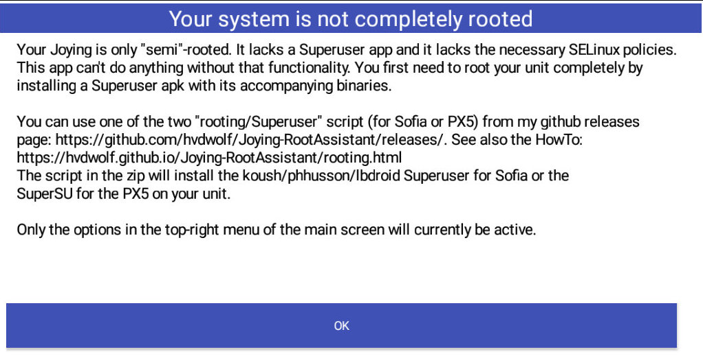
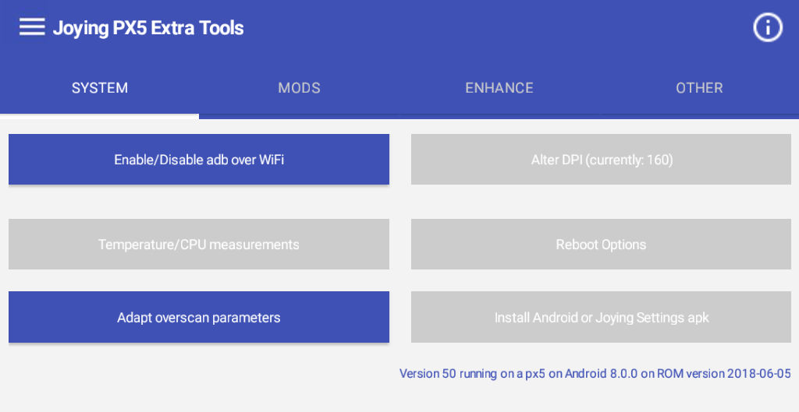
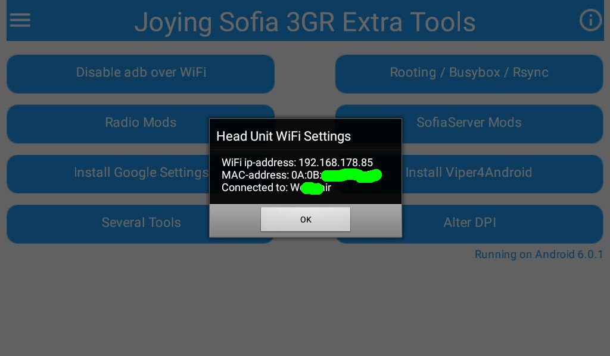

Root your unit
****************************************************************************************************************************
For regular visitors: I changed to another rooting method as the "new" rooting method allows for the installation of the Xposed framework. I switched from Chainfire's SuperSU to the "Koush / phhusson / lbdroid" Superuser version. If you have SuperSU installed, and you want to use Xposed, you first have to flash your unit again with a Joying firmware ROM to have a "clean" base of install.
****************************************************************************************************************************
On Android 6.0.1 this requires 2 steps:
- First you need to "enable adb over wifi" which must be done on your Sofia 3GR head unit, using my apk.
- And then you need to do the rooting itself from your pc/laptop.
On Android 5.1.1 you only need to do the rooting part on the laptop/pc.
Note: If your wireless network has a 2.4GHz and a 5GHz network, make sure you are on the 2.4GHz. Your unit only works on 2.4GHz and from experience I know that when your pc/laptop is on 5GHz, you often can't connect, or you get a message like "device off-line" (even though this is technically complete nonsense. Your router should route fine between 2.4GHz and 5GHz.)
On your head unit
- If you do not have it already, you should download my apk from the Releases page onto your head unit.
When you start the apk you will see the following screen:

Your unit is not fully rooted. You already knew this otherwise you would not try to root it. Simply press OK.
- Next you will see:

On Android 6.0.1 adb over wifi is by default disabled. This will be displayed by the button "Enable adb over WiFi". To root your unit you need to have adb over Wifi enabled.
If you tap the button, it will be enabled.
If the button mentions "Disable adbover Wifi", you don't have to do anything.
- Now you need to know the ip-address of your head unit. Tap the top-left menu button
 and select the option "My WiFi address". and select the option "My WiFi address".
You need the ip-address for the script on your laptop/pc.
You will see something like this:

On your pc:
Linux only: First install adb via your package manager (like on Ubuntu/Debian like distributions: "sudo apt-get install adb")
Steps:
- Download the Superuser install script from the Releases page onto your pc/laptop. It's called Superuser-Sofia3GR-Intel.zip. The installation description there is the same as this "On your pc section" that you are currently reading.
If you have SuperSU (still) installed, you need to flash your unit first with a Joying firmware ROM to have a "clean" base of install. Note that this is only necessary if you want to use Xposed.
- Unzip the Superuser-Sofia3GR-Intel.zip somewhere on your pc/laptop.
- On Windows: Run CMD.exe as Administrator.
- On Linux like OSes: Open a terminal.
- Change to the folder where you unzipped the files and change to the folder where the install.sh and install.bat are located.
- On Windows: Run the install.bat script with the IP address of your Head Unit as a parameter: install.bat 192.168.178.50 (for example)
- On linux: Run the install.sh script with the IP address of your Head Unit as a parameter: ./install.sh 192.168.178.50 (for example)
(If necessary please do a "chmod +x install.sh" first if your script is not executable.)
- Wait until the script finishes.
- Reboot your Head Unit.
You should now have the Superuser application working. This will allow you to give other apps root access as well. It also allows you to use my apk to install several mods and the Xposed framework (Version 33 and up).
|